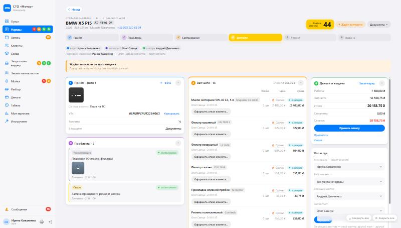
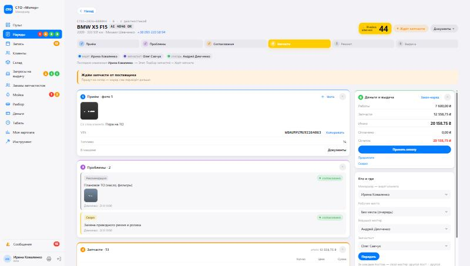
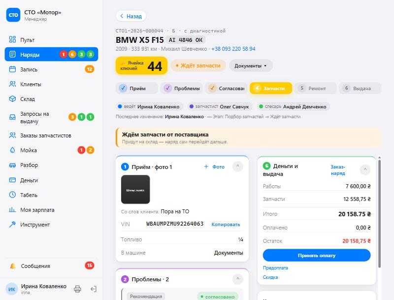
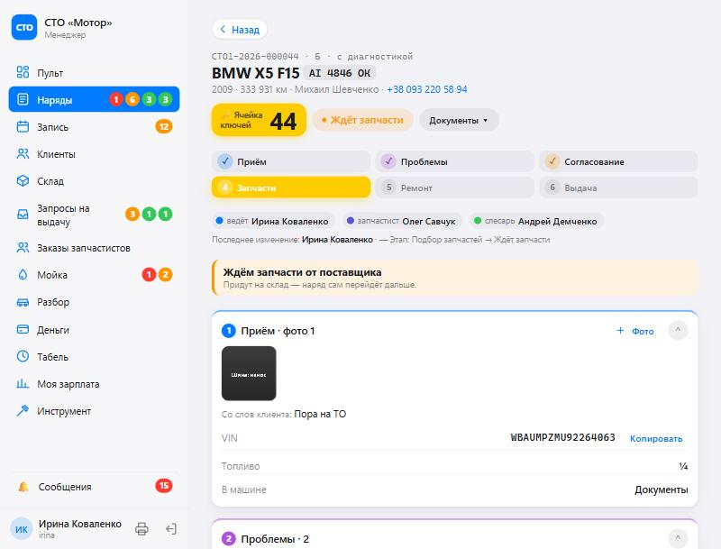
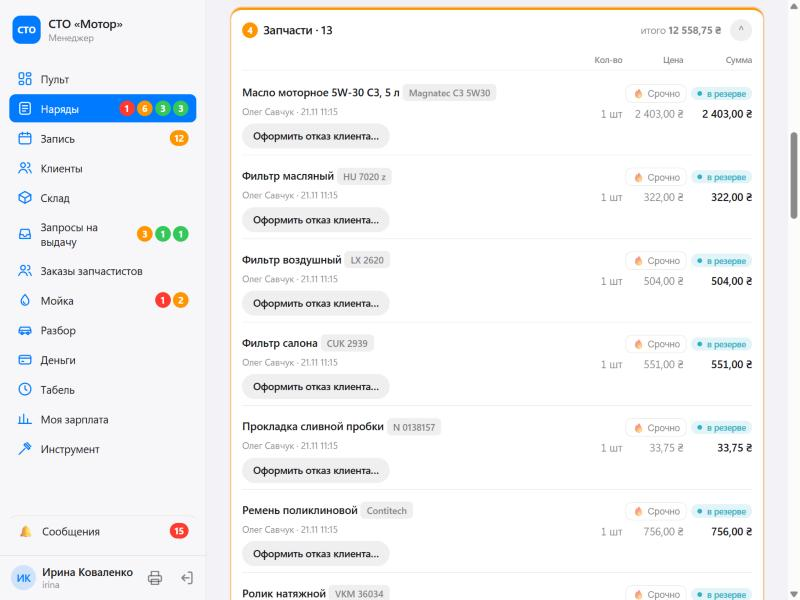
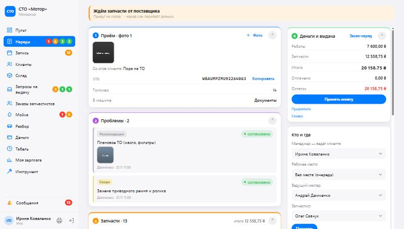
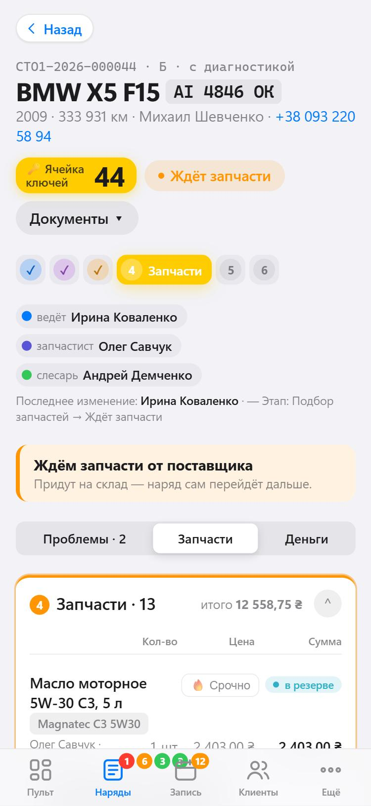
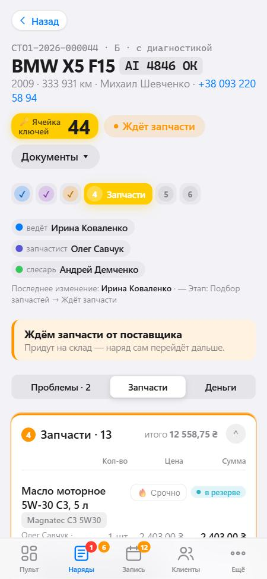

Наряд на разных экранах
Отчёт 22.11.2026 · наряд 000044 (BMW X5, 13 запчастей, 4 работы), вход менеджера
Что было не так
- На больших мониторах (от 1600 px) «Запчасти» и «Работы» уходили во вторую колонку, на ноутбуке — под «Проблемы». Порядок блоков менялся от экрана к экрану.
- На узком ПК (900–1199 px) левая колонка сжималась до ~350 px, подписи этапов обрезались («Согласова…»), заголовки переносились.
- Когда правая колонка выше левой, между «Проблемами» и «Запчастями» появлялась пустая полоса.
- На телефоне цифры у «Нарядов» в нижней панели наезжали на «Запись».
- На любом ПК одинаково: слева этапы 1 Приём → 2 Проблемы → 4 Запчасти → 5 Работы друг под другом, справа «Деньги и выдача», «Кто и где», «Лента», «Сообщения».
- 900–1199 px: всё в одну колонку (сначала этапы, ниже деньги), полоса этапов — 3 × 2, подписи целиком.
- Пустой полосы между блоками больше нет.
- Телефон: у пункта нижней панели не больше двух цифр (самые срочные), остальные видны на странице.
- Каждый блок теперь можно свернуть (кнопка ⌃ справа в заголовке).
Замер на каждом размере
| Экран | Прокрутка вбок | Обрезанные кнопки и подписи | Раскладка |
|---|---|---|---|
| 1920 × 1080 | нет | нет | этапы слева, панель 420 px справа |
| 1366 × 768 | нет | нет | этапы слева, панель 360 px справа |
| 1280 × 720 | нет | нет | этапы слева, панель 360 px справа |
| 1024 × 768 | нет | нет (было: «Согласова…») | одна колонка |
| 768 (планшет) | нет | нет | вкладки «Проблемы / Запчасти / Деньги» |
| 375 (iPhone) | нет | нет | вкладки, нижняя панель — 2 цифры |
1920 — большой монитор


1024 — узкий ноутбук



1366 и 1280 — обычный ноутбук

Телефон и планшет

